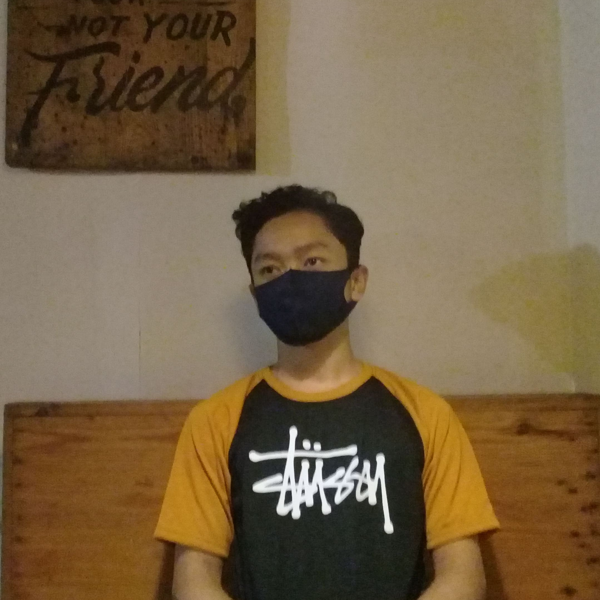

Selayang Pandang Kota Wonogiri
Kebudayaan khas wonogiri
Sebutan bagi Wonogiri yaitu kota Gaplek, yang kaya potensi alam seperti pantai, hutan, goa, untuk dijadikan tujuan wisata. Selain itu, salah satu wilayah Indonesia ini, juga memiliki keanekaragaman budaya dan adat istiadat yang akan diulas. Langsung saja kita berkenalan dengan kebudayaan salah satu kota di Indonesia ini, berikut ulasannya.
- Tari Kethek Ogleng
- Kebudayaan Khas Wonogiri, Karawitan
- Rumah Adat Limasan
- Ewuh Grubyukan
- Gebyar Gajah Mungkur
- Kebudayaan Khas Wonogiri, Susuk Wangan
- Ruwatan Massal
- Jamasan Pusaka Mangkunegaran
Tari tradisional yang termasuk kesenian khas Wonogiri yang menampilkan gerak lucu kera putih yang diiringi musik gamelan riang menghentak. Tarian ini telah menjadi ikon atraksi budaya dan pariwisata. Dalam bahasa Jawa kethek berarti kera, sementara ogleng yaitu bunyi saron demung. Bagi masyarakat Wonogiri, kethek ogleng berfungsi sebagai kesenian rakyat pasca panen, hiburan ketika pesta hajatan atau khitanan, dan lainnya.
Karawitan merupakan salah satu kesenian yang terkenal di Pulau Jawa, salah satunya di Wonogiri. Jadi, kesenian ini merupakan seni gamelan dan suara dengan tangga nada slendro dan pelog. Karawitan berasal dari kata rawit dalam bahasa Jawa, yang artinya halus dan lembut. Maka, karawitan dapat dimaknai sebagai kelembutan perasaan yang terkandung pada seni gamelan. Kesenian ini terbagi menjadi tiga yaitu karawitan sekar, karawitan gending dan karawitan sekar gending.
Bangunan ini termasuk rumah adat Wonogiri yang dapat ditemukan di Jawa Tengah, namanya mengacu pada atap yang berbentuk limas. Rumah ini terdiri dari empat sisi dan sekilas mempunyai kemiripan dengan rumah adat Sumatera Selatan. Namun, rumah adat ini terdiri dari beberapa macam, seperti Lawakan, Klabang Nyander, Gajah Mungkur, dan Semar Pinondhong. Biasanya, bangunan ini berasal dari material bata yang kokoh, dan keunikannya yaitu tidak dicat, tetapi tetap terlihat indah.

Tradisi ewuh grubyukan merupakan adat pernikahan Wonogiri yang menjadi tahapan upacara pernikahan bagi masyarakat Dharmasraya. Jadi, kegiatan dari adat ini yaitu mengiringi pengantin pria ke tempat pengantin wanita, bersama sebuah rombongan. Masing-masing orang dari rombongan tersebut membawa uang, karena itu merupakan syarat grubyukan. Fungsi dari pelaksanaan tradisi ini yaitu membantu dana pesta pernikahan, serta tempat bertemunya muda-mudi antar masyarakat.

Event terbesar pariwisata yang diselenggarakan di Taman Rekreasi Sendang Asri Waduk Gajah Mungkur. Agenda ini dilaksanakan setiap tahun, dalam rangka memeriahkan hari raya Idul Fitri. Pelaksanannya kurang lebih selama dua pekan, dengan mementaskan kesenian seperti orkes Melayu, parade band, campursari, dan atraksi lainnya.
Kegiatan ini merupakan upacara adat Wonogiri bagi masyarakat Desa Setren Kecamatan Slogohimo. Upacara ini merupakan ungkapan rasa syukur ke Sang Khalik atas rezeki kehidupan lewat bumi pertiwi dan air untuk warga. Warga mensyukuri tanah yang subur dan air melimpah, sehingga lahan pertanian subur. Hal itu menjadikan hasil bumi serta bahan makanan melimpah, sehingga warga tidak kelaparan dan terhindar dari penyakit. Tradisi yang dilaksanakan setiap bulan Dzulhijjah, dan prosesinya digelar di objek wisata air terjun Girimanik Desa Setren Slogohimo. Dengan membersihkan saluran air dan kenduri.
Kultur masyarakat Jawa menganggap adanya aura buruk yang dapat menghampiri tubuh manusia, yang bisa disebabkan kelalaian manusia dan lainnya. Masyarakat melakukan prosesi pembersihan aura buruk ini dengan menggelar ruwatan. Ruwatan merupakan sarana pagelaran wayang kulit, yang lakonnya Murwakala, serta dituturkan dalang pengruwat. Pelaksanaan adat ini bersamaan dengan prosesi Jamasan Pusaka Mangkunegaran I bertempat objek wisata Sendang Asri Waduk Gajah Mungkur.

Event ini dilaksanakan pada bulan Muharram setiap tahunnya, sebagai penghormatan kepada Kanjeng Pangeran Adipati Arya Mangkunegoro I. Beliau adalah pendiri awal dalam pemerintahan Kabupaten Wonogiri, dan memiliki peninggalan pusaka yang dipakai untuk mengusir penjajah. Jamasan Pusaka adalah proses pembersihan serta perawatan pusaka Mangkunegaran, dan pusaka lainnya. Setelah dibersihkan, maka pusaka dikembalikan ke tempat penyimpanan. Selain Keanekaragaman Budaya, Ada juga Kuliner khas. Bukan hanya terkenal dengan objek wisata, dan kebudayaan, kabupaten ini juga mempunyai hidangan khas yaitu nasi tiwul. Kuliner ini adalah makanan pengganti nasi, yang dibuat dari ketela pohon atau singkong. Makanan khas lainnya yaitu bakso dan mie ayam. Sering kali Anda melihat tukang bakso atau mie ayam yang mencantumkan nama Wonogiri. Wonogiri merupakan salah satu wilayah di Indonesia yang memiliki ciri khas budaya tersendiri, seperti daerah lainnya. Bahkan, masyarakat daerah itu masih melestarikan kebudayaan peninggalan nenek moyangnya.
Vidio Singkat
About Us
|

Irfan Nurjuliansyah Email : Irfan.20010418@gmail.com |
Selamat Datang di irfanweb.com! irfanweb.com adalah situs web yang menyajikan berbagai macam informasi dan tempat-tempat wisata favorit dan populer di Pulau Jawa. Selain itu, irfanweb.com juga menyediakan informasi lainnya seperti tips berwisata, hotel murah dan sebagainya. Situs ini akan terus diupdate secara rutin disertai gambar-gambar menarik. Dengan menggunakan situs ini berarti Anda setuju dengan kebijakan privasi kami yang dapat dibaca di Kebijakan Privasi. Bila Anda memiliki pertanyaan, kritik, saran, atau masukan, Anda dapat menghubungi irfanweb.com di Halaman Kontak. Kami harap irfanweb.com dapat membantu Anda dalam mendapatkan informasi wisata yang Anda cari dan dapat memberikan referensi dalam menikmati liburan yang Anda inginkan. |
copyright ©2022